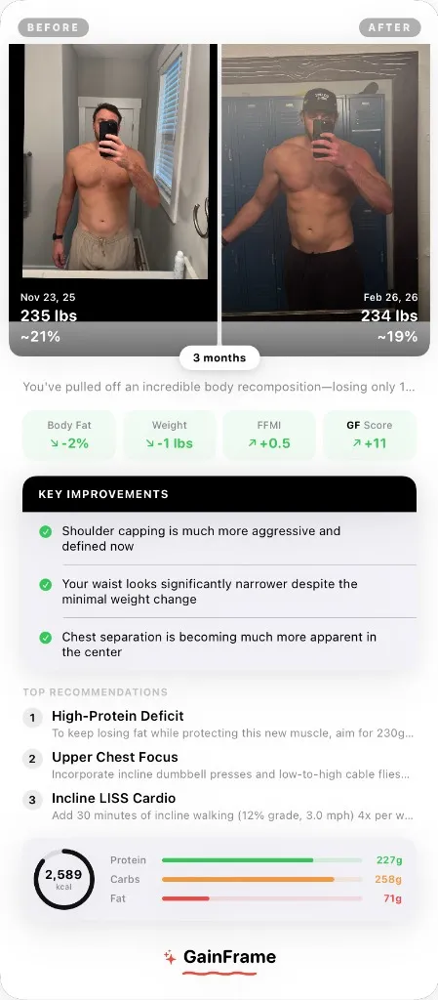

5 Best AI Body Fat Apps in 2026 (Tested & Ranked)
Smart scales are inconsistent. Calipers hurt. DEXA scans cost $150. We tested the best AI body fat apps that estimate your body fat percentage from a single photo — and checked them against actual clinical data.
GainFrame is now available.
Download now from the App Store and start tracking your true progress.
What you get beyond body fat
- 12 muscle group scores — individually rated from Needs Work to Strong
- FFMI and BMI — context metrics that body fat alone can't provide
- Daily macro targets — calculated from your current body composition and goal
- Comparison reports — compare any two photos with exact deltas on every metric
- Tracking over time — not just a snapshot, but a timeline with score and body fat trends
- DEXA-validated accuracy — tested against clinical data

Bottom line: GainFrame is the only AI body fat app that combines photo-based body fat estimation, longitudinal tracking, comparison reports, and clinical-level accuracy — in one app, from a regular gym selfie. No tripod, no controlled setup, no 7-day waiting period.
2. Formfy — Fastest single-scan body fat estimate
Platform: iOS App Store · Price: Free with subscription
Formfy is built for speed. Take a full-body photo, and the AI returns a body fat estimate within seconds. It also includes a meal photo scanner for calorie counting, making it a dual-purpose fitness tool.
Strengths: The instant body fat scan is genuinely fast and the interface is clean. If you want a quick number with minimal friction, Formfy delivers.
Weaknesses: Formfy forces you to rate the app immediately after your first scan — before you've even had a chance to evaluate accuracy. Worse, some features are gated behind a hidden requirement to use the app for 7 consecutive days before results unlock. There's no timeline tracking, no side-by-side comparison, and no muscle group analysis. You get a snapshot number, but no way to track whether that number is trending in the right direction over weeks and months.
Best for: People who want a one-off body fat estimate and don't need long-term tracking.
3. Recomp AI — Best for body recomposition focus
Platform: iOS App Store · Price: Free with subscription
Recomp AI is specifically built for people going through body recomposition — simultaneously losing fat and gaining muscle. It uses AI scanning to estimate body fat and lean mass, with nutrition tracking support.
Strengths: The recomp-specific focus means the app speaks to the right use case. It estimates body fat and lean mass, giving you both sides of the equation.
Weaknesses: No long-term photo timeline or progress tracking across months. No side-by-side comparison features. No workout integration. It's oriented around individual scans rather than tracking a transformation over time — so you get today's number, but no context for whether you're going in the right direction.
Best for: People in a recomp phase who want AI body fat estimates without the broader tracking features.
4. Smart Scales (Withings / Renpho / Eufy) — Most popular, least accurate
Platform: Hardware + iOS/Android companion apps · Price: $30–$150 for hardware
Smart scales are the most widely used body fat measurement tool — and also the most frustrating. Every major brand (Withings Body+, Renpho Smart Scale, Eufy P2 Pro) uses bioelectrical impedance analysis (BIA) to estimate body fat by sending a small electrical current through your body and measuring resistance.
Strengths: Convenient — you step on and get a number. Tracks weight accurately. Some scales integrate with Apple Health, Google Fit, and fitness apps.
Weaknesses: BIA body fat readings are notoriously unreliable. Drink a glass of water? Your body fat drops 2%. Eat a salty meal? It jumps 3%. Sweat during a workout? Different number again. The fundamental technology measures hydration levels, not body fat — and then infers body fat from that. The result is readings that swing wildly day to day, making it nearly impossible to detect real body composition changes. MacroFactor users frequently report that smart scale body fat readings are frustrating, misleading, and often counterproductive for long-term tracking.
Best for: Tracking weight trends (ignore the body fat number entirely).
5. Navy Method & Manual Calculators — Free, but limited
Platform: Web-based (calculator.net, bmi-calculator.net, etc.) · Price: Free
The U.S. Navy body fat formula uses neck and waist circumference (plus height) to estimate body fat. It's been used by the military for decades and there are dozens of free online calculators that implement it.
Strengths: Free. No app required. Based on an established, research-backed formula. Good enough for a ballpark estimate.
Weaknesses: Requires a tape measure and consistent measurement technique. The formula only uses two data points (neck and waist), so it can't detect changes in arm size, shoulder width, leg development, or any other muscle group. It systematically underestimates body fat in people with thicker necks and overestimates in people with narrow waists. There's no visual tracking, no AI, and no ability to compare progress over time.
Best for: Getting a rough baseline number if you don't have access to any other method.
How the best AI body fat apps compare
| Feature | GainFrame | Formfy | Recomp AI | Smart Scales | Navy Method |
|---|---|---|---|---|---|
| AI Body Fat % | ✅ | ✅ | ✅ | BIA only | Formula |
| DEXA Validated | ✅ 0.4% | ❌ | ❌ | ❌ | ❌ |
| Muscle Group Scoring | ✅ 12 groups | ❌ | ❌ | ❌ | ❌ |
| Progress Tracking | ✅ Timeline | ❌ | ❌ | ✅ Weight | ❌ |
| Comparison Reports | ✅ with recs | ❌ | ❌ | ❌ | ❌ |
| Macro Targets | ✅ | Meal scan | Nutrition | ❌ | ❌ |
| Consistent Readings | ✅ Visual | ✅ Visual | ✅ Visual | ❌ Varies | ✅ Manual |
| Price | Free tier | Subscription | Subscription | $30–$150 | Free |
The verdict: which AI body fat app should you use?
If you just want a single body fat number right now with zero setup, Formfy is the fastest scan. If you're specifically recomping, Recomp AI speaks your language. If you want a free rough estimate, the Navy Method calculators are fine for a ballpark.
But if you want your body fat tracking to actually mean something over time — accurate estimates validated against DEXA, a timeline that shows your trends, comparison reports that quantify exactly what changed, and muscle group analysis that tells you where to focus next — GainFrame is the only app in 2026 that does all of that.
Smart scales? Stop trusting the body fat number. Use them for weight tracking and nothing else.
A body fat app should tell you three things: where you are, how you got here, and what to do next. Right now, only one app on this list does all three.
Related Articles
GainFrame is now available.
Download now from the App Store and start tracking your true progress.